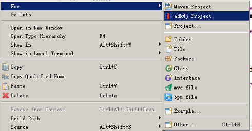

4.3、创建edk4j项目
edk4j项目也是标准的maven项目，对于项目的编译、打包发布都遵从maven规范。
创建edk4j项目的方法有3种：
方法1：使用edk4j可视化开发IDE，切换到“edk4j可视化开发”视图，然后在“新建”菜单中选择“edk4j Project”

方法2：使用eclipse新建war型的maven项目，然后右键该项目，选择“添加edk4j项目支持”
方法3：使用eclipse新建war型的maven项目，然后依照“edk4j项目代码结构”的规范，人工补充缺失的目录和文件